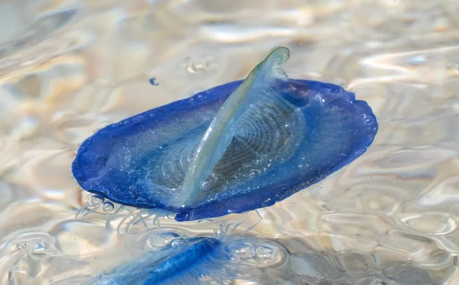

其他无脊椎动物 · 动物界
帆水母 Velella velella

顶着三角形蓝色小帆、靠风漂洋过海的群体水螅，常成片搁浅在海滩上，触手蜇伤较轻但仍会刺痛皮肤。
- 分类
- 门刺胞动物门纲水螅纲目花水螅目科银币水母科属帆水母属
- 栖息环境
- 暖温带与亚热带开阔海面，靠风与洋流漂浮
- 地理分布
- 全球暖温带海洋，中国黄海、东海和南海偶见成群搁浅
- 保护级别
- 暂无评估
物种志
帆水母的浮囊体扁平，呈椭圆形，长3–10厘米，颜色为鲜艳的钴蓝或蓝紫色，中央竖立着一片三角形的帆，像一艘小帆船。浮囊下方垂着短小的触手和生殖体，整体由多个特化的个体组成，并非单一只水母。
有趣的是，帆水母的帆向由遗传决定：有的群体帆朝左，有的朝右，这决定了它们被风吹向哪一侧，也解释了为什么不同海域的搁浅群体常呈不同方向。帆水母生活在暖温带和亚热带的开阔海面，靠风和洋流漂移，触手捕捉浮游生物。大量聚集时，它们会成片被冲上海滩，干枯后像一层蓝白色的塑料片。它的蜇伤比僧帽水母轻得多，但皮肤敏感者仍会红肿、瘙痒；搁浅的个体也仍可能蜇人，不要赤手捡拾。
形态与习性
- 体型浮囊体长3–10厘米，呈鲜艳的蓝色
- 帆中央有三角形帆，靠风推动漂流
- 群体由浮囊体、营养体、生殖体等特化个体组成
- 帆向左旋或右旋由遗传决定，影响漂流方向
- 蜇伤比僧帽水母轻，敏感者仍会红肿瘙痒
- 搁浅常成片冲上海滩，干枯后像塑料片
趣味知识
- 它顶着一片小帆，靠风在海上航行。
- 帆水母的航向由基因决定，有的朝左，有的朝右。
- 搁浅的帆水母仍能蜇人，别赤手去捡。